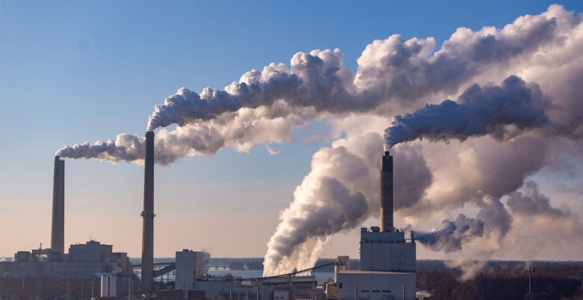
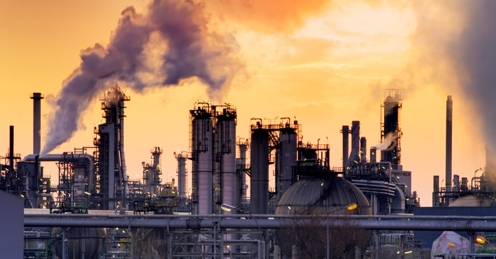

世界の一次エネルギー消費量は経済成長とともに年々増え続けています。下のグラフは世界のエネルギー消費量の推移を表しています。石油換算で1965年の37億トンからから年平均2.5%で増加し続け、2018年には139億トンに達しました。地域別だと、2000年代以降アジア大洋州の新興国の経済成長によって、消費量の伸びが高くなっています。
一方、先進国（OECD諸国）では伸び率が鈍化しています。世界のエネルギー消費量を占めるOECD諸国の割合は、1965年の70.5%から2018年の40.9%と約30ポイント減少しました。この要因としては、人口増加率、経済成長率などにおいて発展途上国と比較して、鈍化傾向にあることや、エネルギー産業の変化や再生可能エネルギーの導入、省エネルギーの推進などが挙げられます。
図1 世界のエネルギー消費量の推移（地域別、一次エネルギー）
出典：経済産業省 資源エネルギー庁「第1節 エネルギー需給の概要」
世界の石油確認埋蔵量は2018年末時点で1兆7297億バレルであり、可採年数は50年となりました。世界で石油確認埋蔵量を最も有するのはベネズエラとサウジアラビアであり、両国合わせて、世界全体の34%のシェアを占めています。また、中東諸国だけで、世界全体の石油埋蔵量の約半分を占めています。
また、天然ガスや石炭、ウランなどの資源も可採年数は、それぞれ50年、132年、115年となっています。天然ガスは中東と欧州、ロシアに埋蔵してあり、石炭は米州、ロシア、豪州、中国に大半が埋蔵されています。ウランはカザフスタンやカナダ、豪州に6割ほどが埋蔵されています。
図2 世界の石油確認埋蔵量（2018年末）
出典：経済産業省 資源エネルギー庁 「第2節 一次エネルギーの動向」
このように、エネルギー資源には限りがあります。このまま経済成長と人口増加が進めば、エネルギー消費量がさらに増加し、エネルギー資源が枯渇してしまうことが現実問題として起こり得ると懸念されています。限りある資源をめぐって世界で資源の獲得競争が激化することが考えられています。
エネルギー問題は地球温暖化問題とも関係しています。近年、化石燃料の消費が急激に増加したためにCO2の排出量が大幅に増加しています。今後は新興国のエネルギー需要が増加し、それに伴う化石燃料の消費が急増することが予想される中で、先進国や新興国が協力してCO2排出を抑えていくことが求められています。
図3 CO2排出量と大気中のCO2濃度の変化
宇宙太陽光発電とは、宇宙空間上で太陽電池を備えた衛星を配置し太陽光発電を行い、そのエネルギーを地球上に送り、電力を使用するというアイデアです。1968年に米国のピーター・グレイザー博士により提唱されたのが始まりです。
化石燃料により二酸化炭素濃度が上昇しており、地球温暖化に対し影響を与えることが懸念されている現在、再生可能エネルギーの重要性は高まっています。宇宙太陽光発電の研究は太陽光を基とする再生可能エネルギー技術に、将来的に新たな選択肢を加えるものと考えられています。
核融合発電とは、核融合エネルギーを用いて発電を行う技術のことです。 核融合とは、水素のような質量の小さな原子の原子核同士が融合して、ヘリウムなどの少し重い原子核となる反応です。核融合反応が起こると、とても大きなエネルギーが発生します。融合が起きる前の原子の重さと融合反応後の原子の重さとの差の質量がエネルギーに変わります。アインシュタインのエネルギーが質量と等価であるという原理 E=mc^2 によりわずかな質量が非常に大きなエネルギーに変化します。
エネルギー問題は世界中で深刻な問題とされています。人口増加や経済成長に伴って、エネルギー消費量は年々増加しています。また、エネルギー資源の枯渇も問題となっており、限りある資源が一部の国々に集中していることから資源を巡る競争が激化することが考えられています。
そのような中で、宇宙太陽光発電や核融合発電などの研究途中の技術が解決策として注目を浴びています。今回紹介した2つの技術は環境にも配慮し、資源の問題などにも対処できるなど大きなメリットがあります。それぞれの技術にも無視できない課題はありますが、実用化がされれば、エネルギー問題の解決に大きく近づくと思われます。今後の研究・開発に期待していきたいと思います。